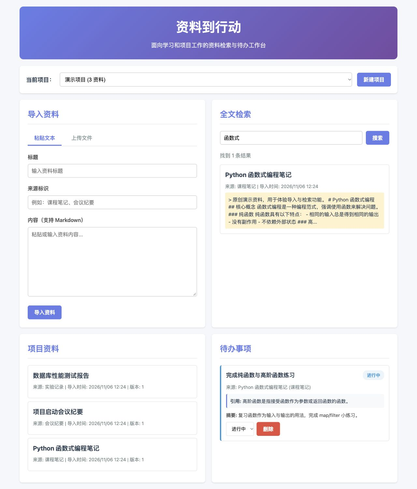

用户痛点
资料分散
课程笔记、实验记录和会议纪要散落在不同地方，难以统一管理
检索困难
找到一段资料后，还要手动记下出处，下次使用时又找不到来源
行动脱节
查到资料后需要手动转成待办，进度跟踪和资料引用分离
版本混乱
资料更新后，之前的引用和待办无法追踪来源变更
核心功能
📁 项目管理
创建和管理多个项目，组织相关资料和待办事项
📄 资料导入
支持 UTF-8 Markdown 和纯文本文件上传，也支持文本粘贴导入
🔎 中文全文检索
基于 seekdb 1.4 的全文搜索（ngram 解析器），支持中文分词，可按项目范围过滤
🔗 可追溯引用
每个待办必须关联资料来源，自动填充连续真实片段作为引用，确保可追溯性
📊 版本追踪
资料更新时自动提示引用来源已变更，保留原引用内容供核对
✅ 待办管理
支持未开始、进行中、完成三种状态，与资料引用紧密结合
应用截图

真实应用界面截图
技术分工
后端
- Python 3.12
- Flask 3.0.0
- PyMySQL 1.2.0
- 参数化 SQL 查询
数据库
- seekdb 1.4（默认端口 2881）
- Full-Text Search + ngram（真实 DDL）
- 中文分词支持
- 环境变量配置
前端
- 原生 HTML + CSS + JavaScript
- 响应式设计
- 中文界面
- 无构建依赖
测试
- pytest 7.4.3
- 46 项集成测试全部通过
- 含独立进程重启验证
- 真实数据库验证
运行步骤
克隆代码
git clone https://github.com/iris82681414-beep/PowerContext2026.git
cd PowerContext2026 && git checkout 2026-competition-ecosystem
cd qoder
创建虚拟环境
python3.12 -m venv venv
source venv/bin/activate
安装依赖
pip install -r requirements.lock
配置数据库
cp .env.example .env
按仓库 README 部署 seekdb 1.4，编辑 .env 配置连接（默认端口 2881）。测试使用独立的可丢弃数据库。
初始化数据库
python init_db.py
创建表结构（含 ngram 全文索引 DDL）和虚构教学示例数据
运行测试
python -m pytest tests/ -v
代码链接
验证状态
46 项测试全部通过
测试结果：46 项集成测试全部通过（真实 seekdb 1.4）
包含验证：两独立 HTTP 服务进程重启、真实全文索引 DDL
测试库隔离：TEST_SEEKDB_DATABASE 独立于 SEEKDB_DATABASE
验收证据
- 📄 integration-acceptance.txt - 集成验收日志（46 passed）
- 📄 process-restart.json - 进程重启验收证据
- 📄 qoder-development-events.json - 开发工具事件记录
- 📄 qoder-final-delivery.cast - CLI 终端记录
说明：本页面为静态展示，不连接数据库。不是已上线的实时 DB 应用。实际应用需按 README 步骤本地启动。
关于本项目
本项目为 2026 竞赛生态赛道参赛作品，基于 seekdb 1.4 数据库实现中文全文检索与待办管理功能。
主要开发工具：Qoder CN（源码检查点 037bcbf6）
分支：2026-competition-ecosystem
项目路径：qoder/
开发时间：2026年11月
后续工作：Codex 负责集成审查、连续原文引用修正、独立进程测试优化等